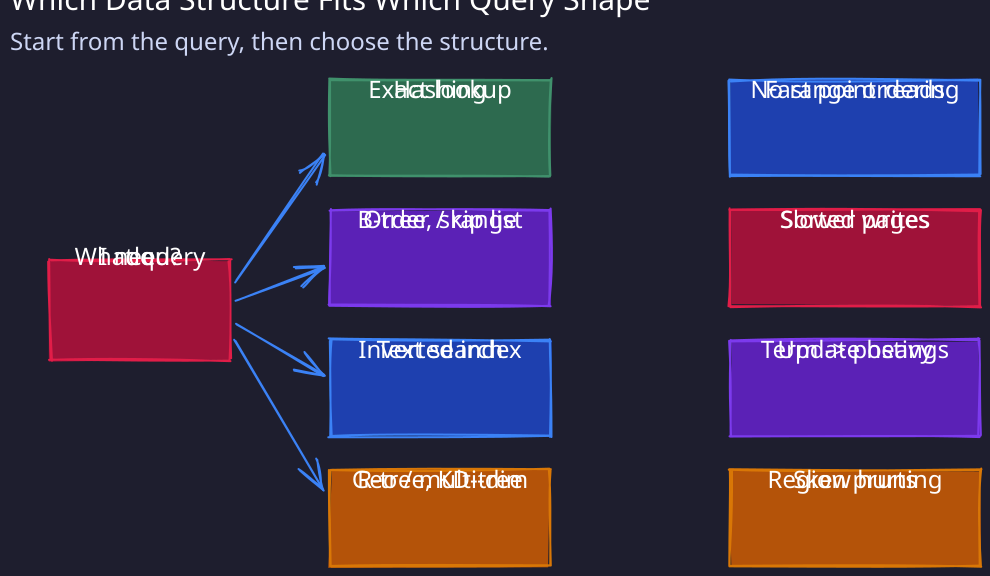
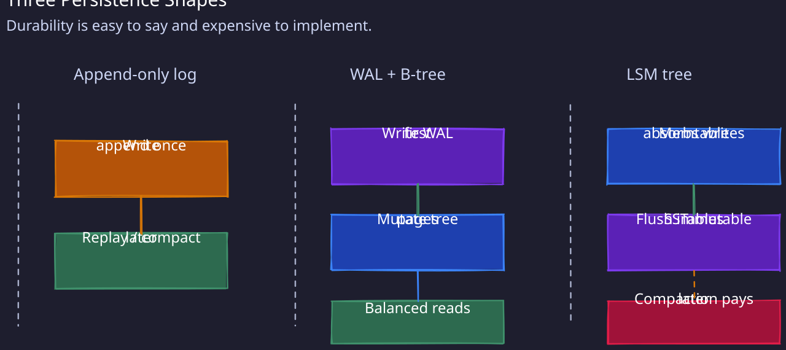
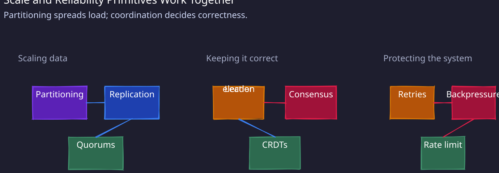

🔎 Data Access & Lookup

Hashing
Use hashing when you need fast key-value lookups, like in hash tables or distributed caches. It gives O(1) average lookup time.
⚠️ Collisions can degrade performance, and poor hash distribution leads to hotspots.
02-Consistent-Hashing
Ideal for distributing data across nodes without reshuffling everything when you add/remove servers (e.g., in Memcached or Dynamo-style DBs).
⚠️ Balances distribution, but doesn’t prevent “hot keys.” Often needs virtual nodes or load-aware hashing.
Sorting
Great for range queries or ordered retrievals (e.g., “get top 10 items by score”). Sorted structures like B-trees or Skip List make range queries efficient.
⚠️ Insertions and updates are slower, since order must be maintained.
Indexing
Indexes speed up retrieval of specific fields without scanning entire tables. Bread-and-butter for relational databases.
⚠️ Extra storage overhead and slower writes (since every update maintains the index).
Inverted Indexes
Power full-text search engines like Elasticsearch. Map terms to document locations for fast text search.
⚠️ Updates are costly since one doc may touch many postings.
Spatial Indexes (R-trees, KD-trees, Quadtrees)
Enable fast geo-queries and multi-dimensional lookups (e.g., “find users within 5 km”).
⚠️ Hard to balance at scale; skewed data reduces efficiency.
💾 Storage Structures & Persistence

Append-only Logs
Used for high-throughput writes where durability matters (01-Kafka logs, database WAL). Sequential appends are fast.
⚠️ Require compaction/cleanup, otherwise logs grow endlessly and recovery slows.
Write-Ahead Logging (WAL)
Databases first write to a log for durability, then update data structures. Guarantees atomicity + durability.
⚠️ Large logs slow recovery; checkpoints and snapshots are needed.
B-Trees
Backbone of RDBMS indexes. Balanced structure optimized for disk I/O, good for mixed workloads.
⚠️ Updates are slower than append-only because tree nodes must be modified.
LSM Trees (Log-Structured Merge Trees)
Great for write-heavy workloads (04-Cassandra, RocksDB). Batch writes in memory, flush to SSTables, merge via compaction.
⚠️ Reads are slower without Bloom filters; compactions create write amplification.
MemTables / In-memory Stores
Keep hot data in RAM (Redis, Memcached). Ultra-fast access.
⚠️ Volatile: data loss on crash unless paired with persistence.
Columnar Storage
Store data column by column. Perfect for OLAP (analytical queries scanning large datasets).
⚠️ Bad for OLTP — single-row updates are very expensive.
Compression
Reduces storage + network transfer. Works well with columnar data (lots of repetition).
⚠️ Adds CPU overhead; hurts random access.
Delta Compression
Store only differences between versions (used in Git, time-series DBs).
⚠️ Reads are slower since reconstructing requires applying deltas.
📊 Specialized Data Structures
Bloom Filters
Check if an item might exist. Prevents unnecessary disk lookups.
⚠️ False positives possible; false negatives not allowed. Not for security checks.
Probabilistic DS (HyperLogLog, Count-Min Sketch)
Estimate cardinalities or frequencies with very low memory.
⚠️ Approximate only; cannot replace exact counters.
Skip List
Support fast searches and inserts with simpler concurrency than B-trees.
⚠️ Higher memory usage; less cache-friendly.
Tries / Radix Trees
Efficient for prefix matching, autocomplete, routing tables, DNS.
⚠️ High memory usage unless compressed.
Merkle Tree
Hash trees used for sync + tamper detection (Git, Cassandra repairs).
⚠️ Rehashing after updates is expensive.
Heaps
Priority queues with O(1) peek, O(log n) insert/delete. Used in schedulers.
⚠️ Arbitrary deletions are inefficient.
Fenwick Trees
Enable fast range queries and prefix sums. Common in algorithms, less in prod systems.
⚠️ Specialized use only.
Ropes
Handle large strings efficiently (editors, text manipulation).
⚠️ Complex balancing, niche usage.
🌍 Scaling & Distribution

Partitioning
Divide data horizontally to scale. Shard by ID, region, or hash.
⚠️ Cross-shard joins/transactions are painful. Risk of hot shards with skewed keys.
Replication
Multiple copies of data for HA and faster reads. Leader-follower or multi-leader setups.
⚠️ Write amplification and consistency conflicts. Failover must be tuned.
Quorums (R+W > N)
Dynamo-style tunable consistency. Ensures overlap between read and write sets.
⚠️ Increases latency; requires coordination.
Event Sourcing
Store every state change as an event. Provides full audit log and easy replay.
⚠️ Hard to query current state; needs snapshots.
CRDTs
Allow replicas to converge without coordination. Great for collaborative apps.
⚠️ Only certain data types/ops supported. Not a general solution.
Copy-on-Write
Efficient for immutability and versioning (ZFS, snapshotting).
⚠️ High write overhead for frequent updates.
Batching
Bundle operations for higher throughput (DB flushes, Kafka batches).
⚠️ Adds latency for individual operations.
Ring Buffer
Circular queues for bounded memory and high-throughput messaging (LMAX Disruptor).
⚠️ Must carefully handle overwrites + backpressure.
🔐 Reliability & Failure Handling
Consensus (Raft, Paxos, ZAB)
Ensure agreement among nodes for critical state (Etcd, Zookeeper, Chubby).
⚠️ Expensive in latency/complexity. Use only for metadata/coordination.
Leader Election
Pick one node to coordinate writes. Simple + strong consistency.
⚠️ Leader bottleneck; failover lag impacts availability.
Circuit Breakers
Stop cascading failures by cutting off unhealthy services.
⚠️ Needs careful tuning — too strict causes false trips, too loose spreads failures.
Retries with Exponential Backoff
Avoid retry storms during outages.
⚠️ Naïve retries can worsen outages.
Backpressure
Slow down producers when consumers lag. Protects downstream stability.
⚠️ Can ripple upstream and stall entire system if unmanaged.
- Strong → predictable but slower.
- Eventual → high availability, but stale reads possible.
- Causal → preserves ordering of related events.
⚠️ Picking the wrong model leads to confusing user-visible bugs.
📡 Observability & Operations
Metrics, Logs, Tracing
Every system must have observability. Metrics = trends, logs = details, tracing = flow.
⚠️ Without this, debugging distributed systems is guesswork.
Health Checks & Heartbeats
Detect failures and trigger failover quickly.
⚠️ Too aggressive → false alarms; too slow → outages linger.
03-Rate-Limiter
Protects system from noisy neighbors and abusive traffic.
⚠️ Poor policies = uneven user experience.
📖 Advanced Data Structures
1. Skip Lists
A skip list is a probabilistic alternative to balanced trees (like AVL/Red-Black trees). It maintains multiple linked lists stacked in layers, where higher layers “skip” over more elements, giving logarithmic search time.
How it works:
- At the bottom layer, you have a simple sorted linked list of all elements.
- Above that, you have lists that skip over elements (like express lanes). Each element has a random chance of being promoted to a higher level.
- Searching starts from the top layer: you move forward until you overshoot, then drop down a level and continue.
Use case: Skip lists are widely used in Redis for implementing sorted sets (because they’re simpler than balanced trees but perform just as well). They’re great for in-memory indexes and range queries.
2. Radix Tree (Patricia Trie)
A radix tree (or compressed trie) is used for storing associative arrays where keys are usually strings or binary numbers. How it works:
- It’s like a trie, but instead of storing one character per node, it compresses common prefixes into single edges.
- For example, keys “cat” and “car” share the prefix “ca”, so the tree branches only at “t” and “r”.
- This makes lookups faster and space-efficient compared to naive tries. Use case:
- Used in IP routing tables (fast longest-prefix matching).
- Also used in some key-value stores (e.g., Linux kernel’s radix tree for page caching).
3. Merkle Tree
A Merkle tree is a hash tree used to verify data integrity efficiently. How it works:
- Leaves contain hashes of data blocks.
- Parent nodes are the hash of concatenated child hashes.
- The root hash (Merkle root) summarizes the entire dataset.
- To verify a block, you don’t need the whole dataset — just a small proof (hashes along the path). Use case:
- Blockchain (Bitcoin/Ethereum) uses Merkle trees to verify transactions.
- Git uses a variant to track file history.
- Any distributed system where you need efficient integrity checks.
4. Segment Tree / Fenwick Tree (BIT)
These are trees designed for range queries and updates on arrays. Segment Tree:
- A binary tree where each node stores information about a segment (interval) of the array.
- Root represents the whole array, children represent subranges.
- Query (like sum or min over a range) is done by combining relevant segments.
- Updates propagate down the tree. Fenwick Tree (Binary Indexed Tree):
- More compact than segment tree, using clever bit manipulation to store partial sums.
- Each index stores a cumulative sum of a range determined by the least significant bit. Use case:
- Competitive programming problems (range sum, prefix sums, range updates).
- Real systems: databases (range aggregates), analytics engines, text editors.
5. Ropes
A rope is a binary tree for efficiently storing and manipulating long strings. How it works:
- Each leaf holds a chunk of characters (like a substring).
- Internal nodes store the weight (length of the left subtree).
- Operations like insert, delete, substring, concatenate are implemented by tree rotations and splitting/merging. Why ropes? Normal strings require O(n) time for concatenation. Ropes reduce it to O(log n). Use case:
- Used in text editors (e.g., Emacs, Eclipse) where frequent insert/delete happens in large texts.
- Ideal when strings are huge (hundreds of MBs).
6. Ring Buffer (Circular Buffer)
A ring buffer is a fixed-size buffer that wraps around when full. How it works:
- Think of an array with two pointers: head (read) and tail (write).
- When tail reaches the end, it wraps around to the start (like a circle).
- If full, it overwrites or blocks (depending on design). Use case:
- Producer-consumer queues (real-time audio, video streaming).
- Networking (packet buffers).
- Lock-free concurrency (since it’s simple and avoids memory allocation).
✅ Summary analogy:
- Skip List → fast probabilistic alternative to balanced BSTs.
- Radix Tree → efficient prefix-based key lookup.
- Merkle Tree → verify integrity of large datasets.
- Segment/Fenwick Tree → fast range queries/updates.
- Rope → efficient long string operations.
- Ring Buffer → fast circular queue for streaming data.
Foundational Data Structures (Classic & Augmented)
Fenwick → Segment Tree → Union-Find → Suffix Arrays → Rope → Trie/Radix
System-Oriented Data Structures
Skip List → Ring Buffer → CoW → Merkle Tree → Lockless Structures
System Design & Storage Systems
Materialized Views → Delta Compression → TSDBs → Batching → Adaptive Structures
Spatial and Domain-Specific Structures
Spatial Indexing → KD-Tree → R-Tree → GeoHashing